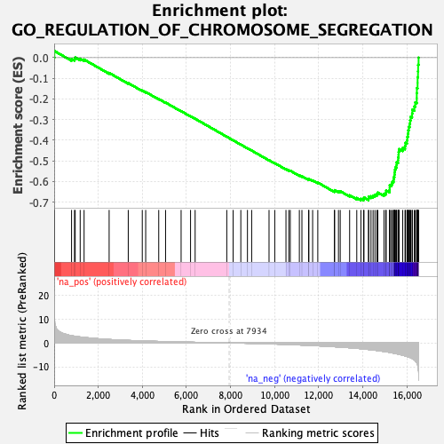

| | | Dataset | DE_genes2 |
| Phenotype | NoPhenotypeAvailable |
| Upregulated in class | na_neg |
| GeneSet | GO_REGULATION_OF_CHROMOSOME_SEGREGATION |
| Enrichment Score (ES) | -0.6918702 |
| Normalized Enrichment Score (NES) | -2.1620302 |
| Nominal p-value | 0.0 |
| FDR q-value | 0.0 |
| FWER p-Value | 0.0 |
Table: GSEA Results Summary

Fig 1: Enrichment plot: GO_REGULATION_OF_CHROMOSOME_SEGREGATION
Profile of the Running ES Score & Positions of GeneSet Members on the Rank Ordered List
| PROBE | GENE SYMBOL | GENE_TITLE | RANK IN GENE LIST | RANK METRIC SCORE | RUNNING ES | CORE ENRICHMENT | | 1 | LCMT1 | | | 10 | 11.072 | 0.0323 | No |
| 2 | SIRT2 | | | 789 | 3.063 | -0.0059 | No |
| 3 | MAD1L1 | | | 922 | 2.842 | -0.0055 | No |
| 4 | CDC42 | | | 954 | 2.787 | 0.0009 | No |
| 5 | BECN1 | | | 1180 | 2.496 | -0.0054 | No |
| 6 | KLHL22 | | | 1357 | 2.307 | -0.0092 | No |
| 7 | NUMA1 | | | 2493 | 1.446 | -0.0739 | No |
| 8 | DDX11 | | | 3360 | 1.054 | -0.1235 | No |
| 9 | DYNC1H1 | | | 3996 | 0.838 | -0.1596 | No |
| 10 | CTNNB1 | | | 4151 | 0.794 | -0.1666 | No |
| 11 | AXIN2 | | | 4742 | 0.627 | -0.2006 | No |
| 12 | PUM1 | | | 5052 | 0.557 | -0.2178 | No |
| 13 | RCC2 | | | 5757 | 0.393 | -0.2594 | No |
| 14 | MAPK15 | | | 6185 | 0.308 | -0.2845 | No |
| 15 | ANAPC15 | | | 6393 | 0.265 | -0.2963 | No |
| 16 | MAD2L2 | | | 7828 | 0.012 | -0.3835 | No |
| 17 | HDAC8 | | | 8117 | -0.029 | -0.4009 | No |
| 18 | ANAPC5 | | | 8465 | -0.087 | -0.4218 | No |
| 19 | PSMG2 | | | 8766 | -0.147 | -0.4396 | No |
| 20 | ZNF207 | | | 8957 | -0.183 | -0.4506 | No |
| 21 | HECW2 | | | 9745 | -0.384 | -0.4973 | No |
| 22 | NAA10 | | | 10004 | -0.462 | -0.5116 | No |
| 23 | TNKS | | | 10513 | -0.630 | -0.5406 | No |
| 24 | NSMCE2 | | | 10641 | -0.675 | -0.5464 | No |
| 25 | NEK6 | | | 10708 | -0.693 | -0.5483 | No |
| 26 | CSNK2A2 | | | 11120 | -0.849 | -0.5708 | No |
| 27 | CDC23 | | | 11236 | -0.896 | -0.5751 | No |
| 28 | CSNK2A1 | | | 11539 | -1.024 | -0.5904 | No |
| 29 | PTTG3P | | | 11552 | -1.029 | -0.5881 | No |
| 30 | ANAPC11 | | | 11722 | -1.095 | -0.5951 | No |
| 31 | DYNC1LI1 | | | 11956 | -1.198 | -0.6058 | No |
| 32 | XRCC3 | | | 12710 | -1.592 | -0.6468 | No |
| 33 | DUSP1 | | | 12720 | -1.599 | -0.6426 | No |
| 34 | CDC26 | | | 12894 | -1.710 | -0.6481 | No |
| 35 | CTCF | | | 12974 | -1.752 | -0.6477 | No |
| 36 | CDT1 | | | 13400 | -2.026 | -0.6675 | No |
| 37 | IK | | | 13724 | -2.259 | -0.6804 | No |
| 38 | FEN1 | | | 13911 | -2.426 | -0.6845 | Yes |
| 39 | CDK5RAP2 | | | 14033 | -2.527 | -0.6844 | Yes |
| 40 | NEK2 | | | 14051 | -2.552 | -0.6778 | Yes |
| 41 | KNSTRN | | | 14258 | -2.748 | -0.6822 | Yes |
| 42 | ESPL1 | | | 14262 | -2.749 | -0.6742 | Yes |
| 43 | PCID2 | | | 14369 | -2.855 | -0.6721 | Yes |
| 44 | PTTG1 | | | 14464 | -2.952 | -0.6691 | Yes |
| 45 | BUB3 | | | 14549 | -3.043 | -0.6651 | Yes |
| 46 | CDC27 | | | 14637 | -3.170 | -0.6610 | Yes |
| 47 | ZW10 | | | 14679 | -3.216 | -0.6539 | Yes |
| 48 | RACGAP1 | | | 14957 | -3.580 | -0.6601 | Yes |
| 49 | TACC3 | | | 15038 | -3.698 | -0.6540 | Yes |
| 50 | HNRNPU | | | 15058 | -3.735 | -0.6441 | Yes |
| 51 | NIPBL | | | 15209 | -3.928 | -0.6415 | Yes |
| 52 | ANAPC1 | | | 15217 | -3.941 | -0.6302 | Yes |
| 53 | ATM | | | 15219 | -3.945 | -0.6186 | Yes |
| 54 | HORMAD1 | | | 15302 | -4.116 | -0.6113 | Yes |
| 55 | SPAG5 | | | 15339 | -4.181 | -0.6011 | Yes |
| 56 | CDCA5 | | | 15393 | -4.273 | -0.5916 | Yes |
| 57 | CDC20 | | | 15404 | -4.309 | -0.5794 | Yes |
| 58 | CUL3 | | | 15431 | -4.357 | -0.5680 | Yes |
| 59 | RMI2 | | | 15440 | -4.370 | -0.5555 | Yes |
| 60 | RIOK2 | | | 15454 | -4.393 | -0.5433 | Yes |
| 61 | GEN1 | | | 15480 | -4.447 | -0.5316 | Yes |
| 62 | TRIP13 | | | 15527 | -4.544 | -0.5208 | Yes |
| 63 | RAD18 | | | 15531 | -4.556 | -0.5075 | Yes |
| 64 | ATRX | | | 15599 | -4.719 | -0.4975 | Yes |
| 65 | SFPQ | | | 15601 | -4.724 | -0.4835 | Yes |
| 66 | TTL | | | 15619 | -4.760 | -0.4704 | Yes |
| 67 | PLK1 | | | 15623 | -4.763 | -0.4565 | Yes |
| 68 | CCNB1 | | | 15643 | -4.796 | -0.4434 | Yes |
| 69 | RB1 | | | 15805 | -5.145 | -0.4379 | Yes |
| 70 | APC | | | 15912 | -5.426 | -0.4282 | Yes |
| 71 | RAD21 | | | 15930 | -5.459 | -0.4130 | Yes |
| 72 | TPR | | | 16001 | -5.664 | -0.4004 | Yes |
| 73 | SMC5 | | | 16016 | -5.725 | -0.3842 | Yes |
| 74 | MAD2L1 | | | 16043 | -5.805 | -0.3686 | Yes |
| 75 | KIF2C | | | 16061 | -5.848 | -0.3522 | Yes |
| 76 | ECT2 | | | 16082 | -5.906 | -0.3359 | Yes |
| 77 | AURKB | | | 16120 | -6.007 | -0.3203 | Yes |
| 78 | BUB1 | | | 16142 | -6.084 | -0.3035 | Yes |
| 79 | FBXO5 | | | 16169 | -6.210 | -0.2866 | Yes |
| 80 | SPDL1 | | | 16232 | -6.486 | -0.2711 | Yes |
| 81 | ANAPC4 | | | 16245 | -6.526 | -0.2524 | Yes |
| 82 | BUB1B | | | 16335 | -7.102 | -0.2367 | Yes |
| 83 | CDC6 | | | 16375 | -7.439 | -0.2170 | Yes |
| 84 | TTK | | | 16444 | -8.189 | -0.1967 | Yes |
| 85 | PUM2 | | | 16445 | -8.221 | -0.1723 | Yes |
| 86 | SMC6 | | | 16450 | -8.331 | -0.1478 | Yes |
| 87 | DLGAP5 | | | 16482 | -9.145 | -0.1225 | Yes |
| 88 | MKI67 | | | 16483 | -9.193 | -0.0952 | Yes |
| 89 | CENPE | | | 16501 | -10.010 | -0.0664 | Yes |
| 90 | CENPF | | | 16507 | -10.688 | -0.0350 | Yes |
| 91 | NDC80 | | | 16527 | -12.233 | 0.0002 | Yes |
Table: GSEA details [plain text format]
Fig 2: GO_REGULATION_OF_CHROMOSOME_SEGREGATION: Random ES distribution
Gene set null distribution of ES for GO_REGULATION_OF_CHROMOSOME_SEGREGATION